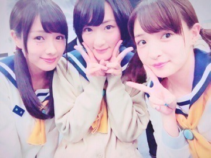
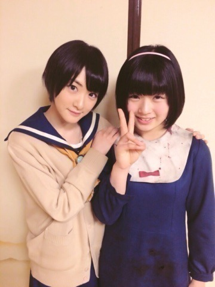
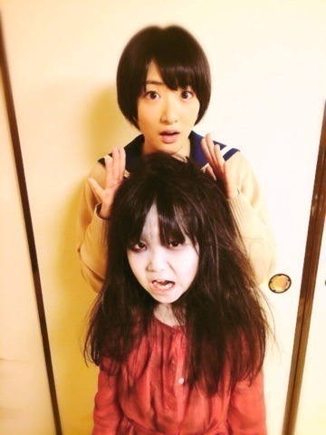

| 2015/08 03 Mon | コープスパーティー 公開しましたヽ(・∀・)ノ |
8月1日、
ついに私が初の主演、初ホラー映画主演しました
映画 コープスパーティー
が公開されました〜ヽ(・∀・)ノ
ただいま絶賛公開中ですよ☆☆
1日名古屋、2日東京会場で舞台挨拶を行いました！
どちらも沢山の方に来て頂き本当に嬉しかったです！！
今回
コープスパーティーという作品に携わると聞いた時、
まず最初は耳を疑いました。
私に、そんな事が起こるのか？と。
何回もスタッフさんに
ドッキリ⁈ドッキリ⁉︎
って聞いたりして、
コープスパーティーを調べると
これはすごく歴史のある作品だと知り、
原作が素敵で強くて、
その実写化という事で、、
生駒は二次元大好きで、二次元が原作の作品を
キャラクターが愛されている作品を三次元で人間が演じる、私に関してはアイドルだし、
原作が好きな方の気持ちはよく分かるし、
自分じゃとても務まらないと不安に押し潰されそうになり、
沢山スタッフさん達とお話ししました。
でも、今までの私と今回の私は違いました。
口からは不安しか出て来なかったけれど、心の中では、
これを頑張ったら自分の何かが変わるかも知れないって思っていました。
兼任が私を変えてくれた様に、
演技が苦手なんです。
と逃げてばかりの自分を変えたくて、新しい何かを見つけたくて
そんな想いも含めてこの作品作りに挑戦しました。
私は、主演という立場に立たせて頂きましたが、
全然です。
私は一番勉強する事が多かったし、
迷惑も沢山かけたと思いますし、
山田監督は、クランクインする前からずっと演技について一対一で、
人見知り発動してちょっと扱いにくい生駒ちゃんをちゃんと見て下さいました。
山田監督に沢山助けて頂きました。
だから、自分にちゃんと向き合う事が出来たと思います。
共演者の皆さんからも沢山の刺激をもらいました。
皆さん経験豊富な先輩方で、
こちらも人見知り発動してちょっと扱いにくい（結構扱いにくいかったと思います。。）
私に声をかけてくださって、、
撮影も生駒がなかなかできないところもずっとつき合って下さいました。
完成した作品を観ると
一目瞭然です。
全然レベルが違くて、
でもひとりひとりに惹かれていきました。
凄いっ
こんなに素敵な方達と同じ作品に出れたんだと震えました。
いつもは凄い人を見ると
自分がちっぽけに見えて結構しょんぼりしてしまうのですが、
こんな風に惹かれてしまうって思う人に、
早く皆さんみたいになりたいって思いました！！
本当、皆さん凄いなぁ！！
今更ながら、生駒ちゃん大丈夫かなぁ。。。
でもでも！！
作品自体は本当に怖くて怖くて面白いです！！
グロテスクな描写、お化けの怖さだけじゃなく
人間の感情の動きもリアルに描かれています。
これがまぁ〜怖いのよ！
女って怖って思うし笑
自分に危機が迫っているのに、守りたいと思う相手に対しての優しさなど、
ひとりひとりが主人公の見所満載の作品ですヽ(・∀・)ノ
改めてこの作品に出会えて良かったです。
怖い作品ですが、それ以上に私にいろんな事を教えてくれました。
中嶋直美さん
生駒を選んでくださってありがとうございます。
もっともっと力があったらもっと貴女に近づく事が出来たかも知れません。
力不足が多々あります。
もし、またどこかで貴女になる時が来たらその時はまた力を貸して下さい。
でも、今回で自分の出来なさを痛感しました。
悔しいです。
私にくださったチャンス。
もっと良くしていきたいです。
いっぱい修行が必要だなぁ。
いっぱい考えなきゃなぁ。
新しい壁を見つけた気がします。
頑張る！！
出来ないで終わらせないぞ〜！
泣き虫のヘタレの弱虫
っていうイメージを消すのは自分しかいないよね。

わ〜いヽ(・∀・)ノ
久しぶりに集合しましたヽ(・∀・)ノ
全員じゃなくてちょっと寂しかったけど

今度ごはんいくんだ〜ヽ(・∀・)ノ
こんな可愛い女子に囲まれて私はそれだけで幸せ❤︎❤︎❤︎
9月には コープスパーティー アンリミテッド版
という
もっと怖さやグロさを増したバージョンも公開になりますのでお楽しみにっヽ(・∀・)ノ
最後に、
生駒をこの様な素晴らしい機会に選んでくださってありがとうございます！
山田監督、祁答院さん、並びにコープスパーティーのスタッフさん
共演者の皆様本当にありがとうございました！！
そして、生駒ふぁむの皆さん、
たーくさんコープスパーティーを楽しんでくださいね！！
もちろん！
生駒推しじゃないって方もどうぞよろしくお願いしますヽ(・∀・)ノ

みんなの妹由香ちゃん

キーホルダー受け取りました〜ヽ(・∀・)ノ
お姉ちゃん頑張るっ！！

みんなのホラー妹サチコちゃん
演技の面で生駒よりずっと年下なのにずっと大人でした。
尊敬してます！
ブレスレットありがとう

ではっ！
コープスパーティー大ヒットを願って！！
へばなっ☆彡
（コープスパーティーはいろんなパターンのお話しがあるから、もし願いが叶うならまた違うパターンのお話しをみんなで演じたいよねって監督含めみんなでお話ししました〜ヽ(・∀・)ノだからねっ⁉︎お天道様〜！！）
コメント(616)
2015/08/03 11:42